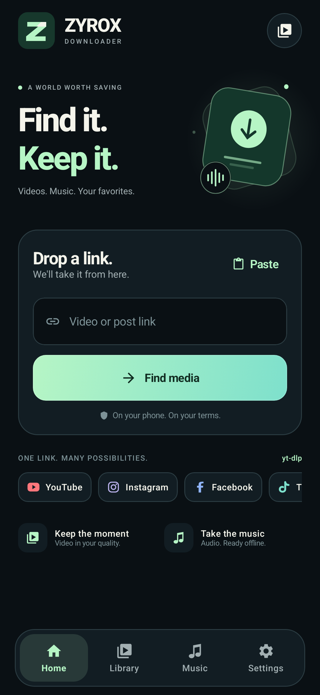
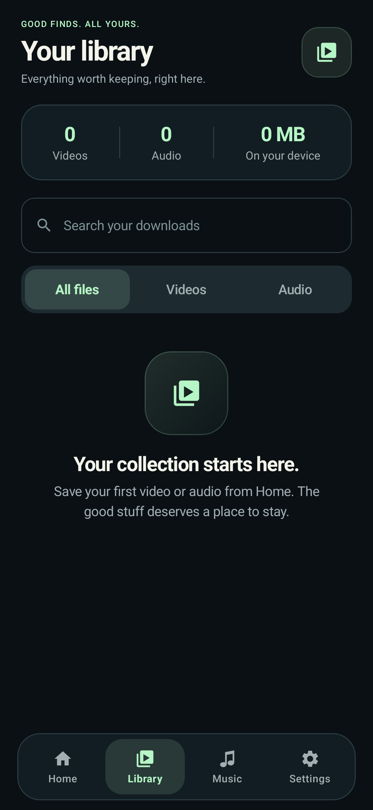
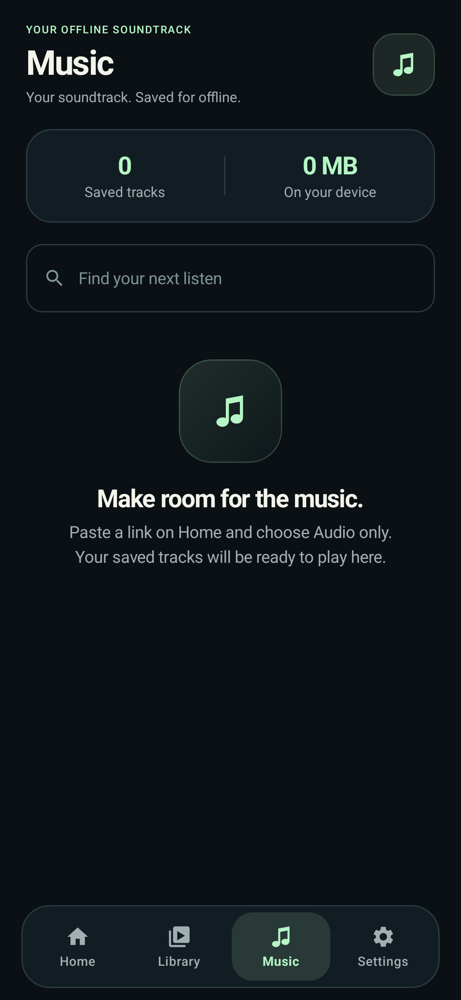
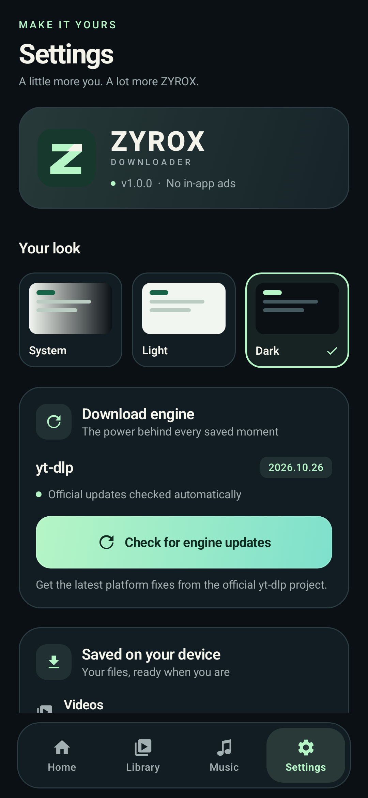
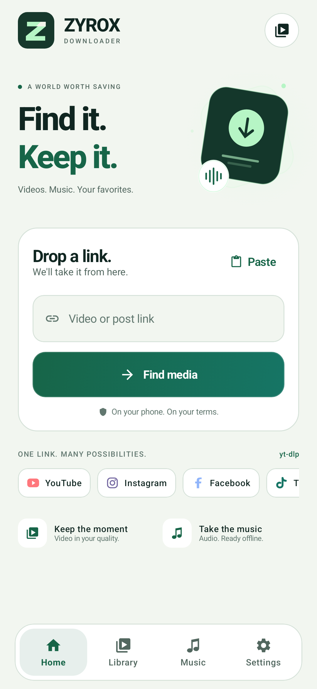
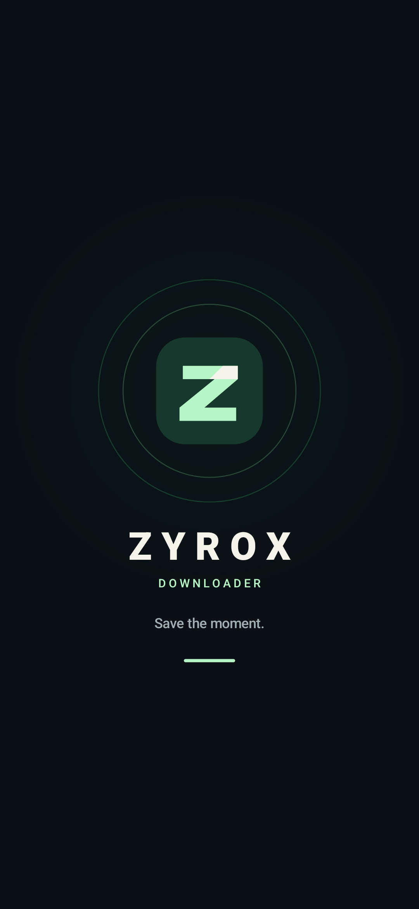

ON-DEVICE BY DESIGN
Your phone does
the heavy lifting.
Extraction with yt-dlp. Media processing with FFmpeg. Built into the app, with no separate download server or API key to configure.
YOUR NEXT FAVORITE. NOW OFFLINE.
The video. The music. That one good find.
Save public media links right on your phone, with the format and quality you choose.
Small interface. Serious engine.
yt-dlp + FFmpeg, running on your phone.

LESS FRICTION. MORE FREEDOM.
A thoughtful Android app for getting from a link to a file you can keep.
ON-DEVICE BY DESIGN
Extraction with yt-dlp. Media processing with FFmpeg. Built into the app, with no separate download server or API key to configure.
Choose video or audio, then select from the available quality options. See file-size estimates when the source provides them.
Follow real download progress, speed and remaining time. Cancel a task or retry a failed download from the queue.
Browse your download history, search by title, and filter video or audio. Play, share or delete your saved media.
A dedicated Music tab and a built-in local audio and video player. Your downloaded files play without app ads.
Share a link into ZYROX or share a saved file out. Choose dark, light or system appearance, with a clean interface throughout.
Works with public links supported by yt-dlp. Site availability and available formats can change. Explore supported sites
MEET YOUR NEW DOWNLOAD SPACE
Paste. Find media. Make it yours.

Your saved media, easy to find.

A dedicated space for your audio.

Themes, storage and engine updates.

Fresh, clear and easy on the eyes.

A custom logo and animated welcome.
Screens rendered from the app UI. These previews are not device captures.
FROM THE FEED TO YOUR PHONE
Copy a public media URL or use another app's Share menu to send a link to ZYROX.
Find available media, choose video or audio, and select the quality that works for you.
Follow the download, then open your Library or Music tab to play or share the saved file.
READY WHEN YOU ARE
Get ZYROX DOWNLOADER for your Android phone.
Download APKRelease notes & checksumsDownload the APK from the official GitHub release.
Open the file. If Android asks, allow installation from the browser or file manager you used.
Install ZYROX, open it, and bring your first public link.
v1.0.0 · ARM64 · Android 10+ · APK approximately 62.2 MB
Development-signed build. Check the release notes before installing.
ZYROX uses yt-dlp for public video and audio links on supported sites. It cannot promise access to every account or every post. Private, login-required, restricted or DRM-protected media may be unavailable. Site changes can also affect extraction.
No separate backend or API key is needed. yt-dlp and FFmpeg run on the phone. An internet connection is required to find and download online media; saved files can be played offline.
ZYROX does not include an app advertising SDK, and its local media player shows no app ads. This does not remove ads from other apps, websites or third-party players.
This release targets ARM64 Android devices running Android 10 or newer. It is not an x86 emulator or 32-bit ARM build. The APK is development-signed and distributed through GitHub releases.
Check that the link opens publicly and is supported by yt-dlp. ZYROX includes engine updates with verification in Settings. If updating does not help, include the platform and the error message in a GitHub issue.
ZYROX is a rebrand of the VidGrab project by Saurabh-gzp, with a new visual identity, screens and local player. Original project credits and third-party license notices are included with the source. Download only media you own or have permission to save.